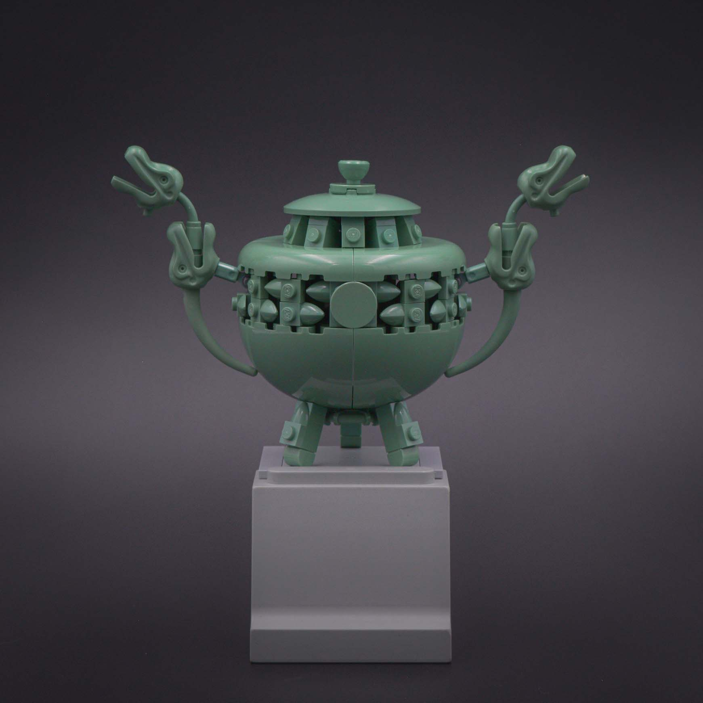
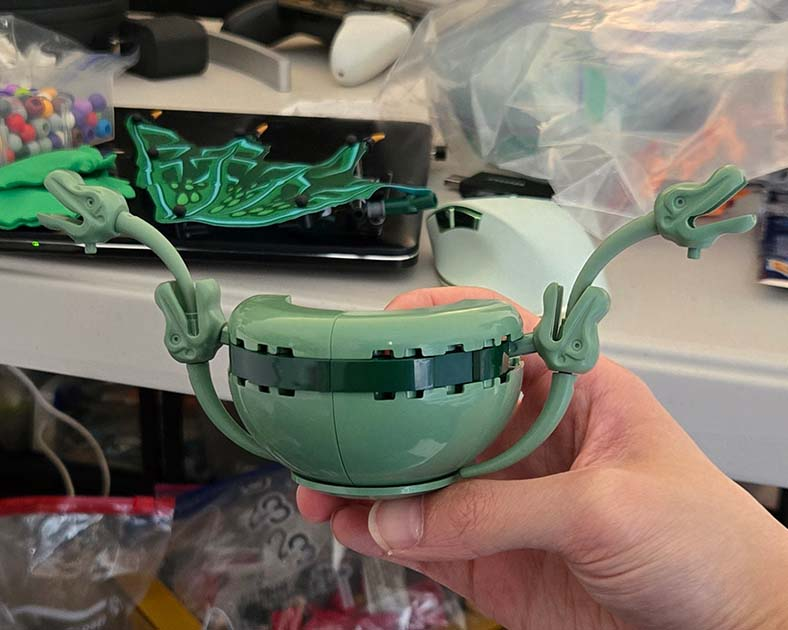
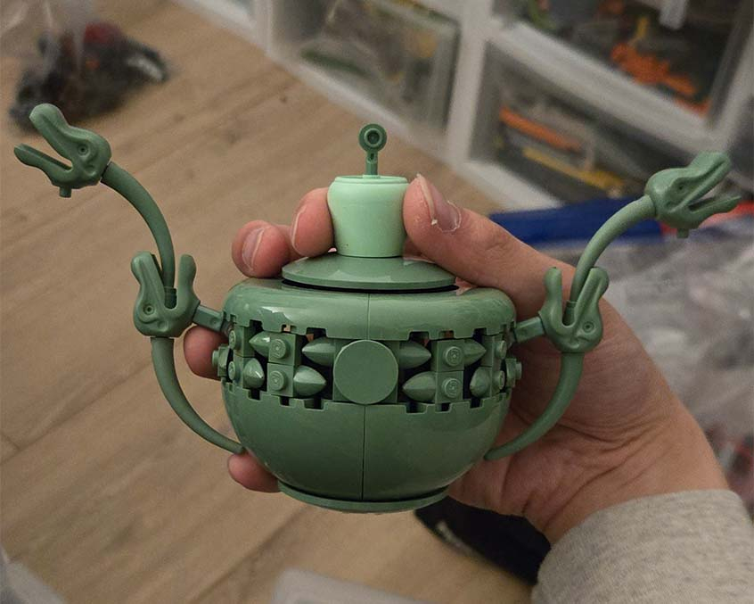
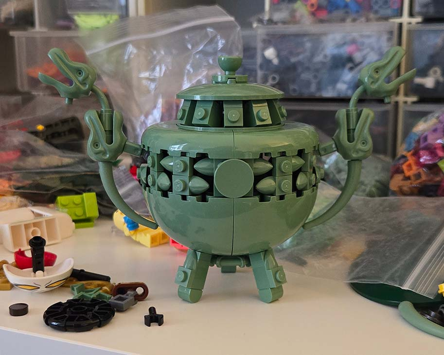
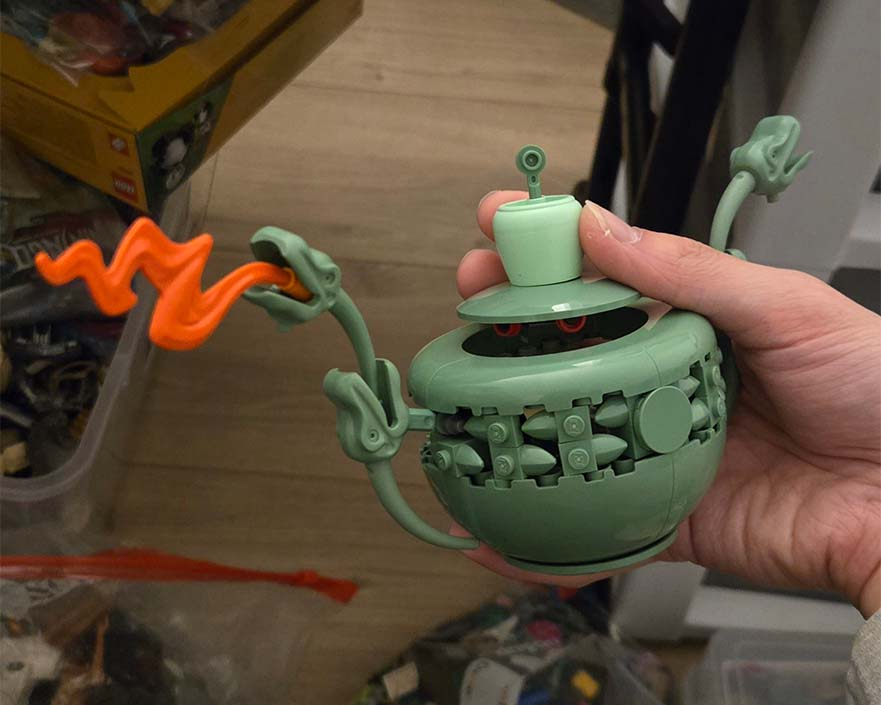
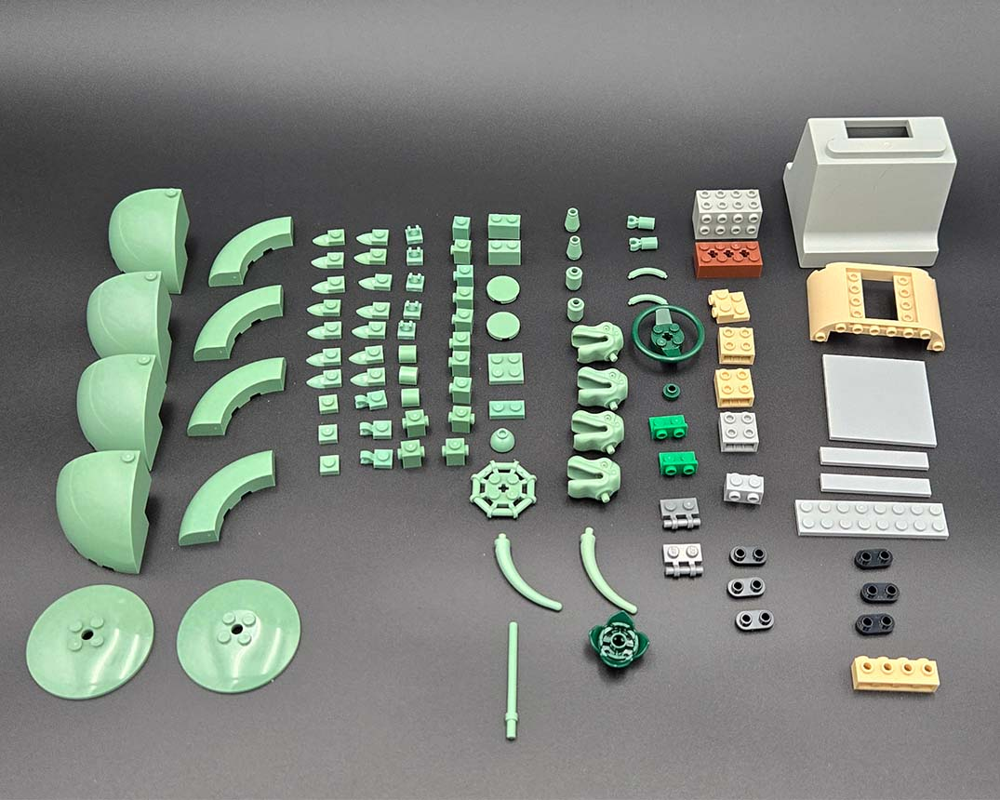

Ancient Vessel (鼎)

This week's Rogue Olympics theme was, interestingly, another colour: green. It seems like this year is turning into the pottery Olympics, as I've created yet another pottery build. This one is based off ancient Chinese vessels (鼎) and incense burners.
Embracing the Stud
Coincidentally, this was another week where the Botanical domes came in clutch. The main challenge from these parts this time was figuring out a way to blend in the cutouts on their anti-stud side. At first, I tried to resolve this through colour blocking by adding a curved slope layer in dark green to imply a differnet texture or decoration on the pot.

trying to separate the greens
However, I felt this didn't quite work. The vessels usually have some sort of engraving details, and this attempt felt too smooth and low res. After some trial and error, I decided maybe the solution was not to draw attention away from the cutouts but to rather use them to my advantage to make the engraving detail. I used the tooth plates in a pattern to create negative space for the engravings, which was further enhanced by the cutouts.

embrace the stud!
Now usually, I like to keep my models smooth and cover studs, but in this case, the studs actually provide texturing and noise to break up the smoothness of the dome pieces. To make the stud texture more intentional and not immediately scream Lego, I added in a 2x2 round tile at the center, giving the circular textures variety in scale. Lastly, I continued the stud motif in the legs and lid of the pot.

more studs!
green anteaque?
Last week, I talked about making the beer kettle into a character as the beer kettle wasn't as interesting on its own. Admittedly, I considered turning this one into a character too. With the theme being "green", I thought it would be funny to make a follow-up to "blue anteaque" with "green anteaque". However, I ended up not doing this as I felt the tone of the model was heading into a more serious/realistic direction. A vessel sort-of creature has been on my list of things to build though, so this was nice practice for at least the vessel portion.

green anteaque (rip)
Composition
For the final composition, I wanted it to appear like a museum picture. I wanted the vessel to be placed on some sort of pedestal. However, when I moved my parts, I didn't bring some parts like giant 1x6x5 wall panels. I don't use them enough that I didn't think they were necessary to bring over. So now, I had to find a different solution. Luckily there are plenty of thrift stores around here with wacky parts, and I had picked up these Duplo bridge supports a while ago. So yes, even the stand is made of Lego! The final model ended up being 100 pieces.
